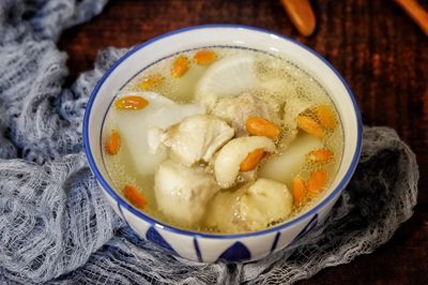
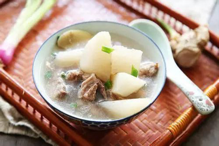

萝卜炖羊肉
萝卜炖羊肉是用白萝卜、羊肉制作的一道家常菜。萝卜软烂，清香味淡，具有清痰止咳，温中益气之功效。 增强机体免疫功能:萝卜含丰富的维生素C和微量元素锌，有助于增强机体的免疫功能，提高抗病能力。
食材准备，主料:羊肉400克，白萝卜50克，蒜苗15克，生姜1小块，大料适量，桂皮适量。配料:食用油30克，红油3小匙，酱油3小匙，高汤3大匙，料酒1/3大匙，胡椒粉少许，豆瓣酱3小匙，精盐2小匙，味精1/2小匙。制作步骤：1.羊肉洗净切块，白萝卜洗净去皮切块，生姜洗净拍松，蒜苗洗净切段。2.往锅里放油，烧热，放入姜、大料、桂皮、豆瓣酱、羊肉爆炒出香味，注入料酒、高汤，用中火烧 3.然后加入白萝卜、盐、味精、胡椒粉、酱油烧透至入味，放入蒜苗、红油稍烧片刻即可。

增强机体免疫功能:萝卜含丰富的维生素C和微量元素锌，有助于增强机体的免疫功能，提高抗病能力;帮助消化:萝卜中的芥子油能促进胃肠蠕动，增加食欲，帮助消化;帮助营养物质的吸收:萝卜中的淀粉酶能分解食物中的淀粉、脂肪、使之得到充分的吸收;防癌抗癌:萝卜含有木质素，能提高巨噬细胞的活力，吞噬癌细胞。此外，萝卜所含的多种酶，能分解致癌的亚硝酸胺，具有防癌作用。
羊肉性温，冬季常吃羊肉，不仅可以增加人体热量，抵御寒冷，而且还能增加消化酶，保护胃壁，修复胃粘膜，帮助脾胃消化，起到抗衰老的作用;羊肉营养丰富，对肺结核、气管炎、哮喘、贫血、产后气血两虚、腹部冷痛、体虚畏寒、营养不良、腰膝酸软、阳痿早泄以及一切虚寒病症均有很大裨益;具有补肾壮阳、补虚温中等作用，男士适合经常食用。
版权所有：舌尖上的美食网